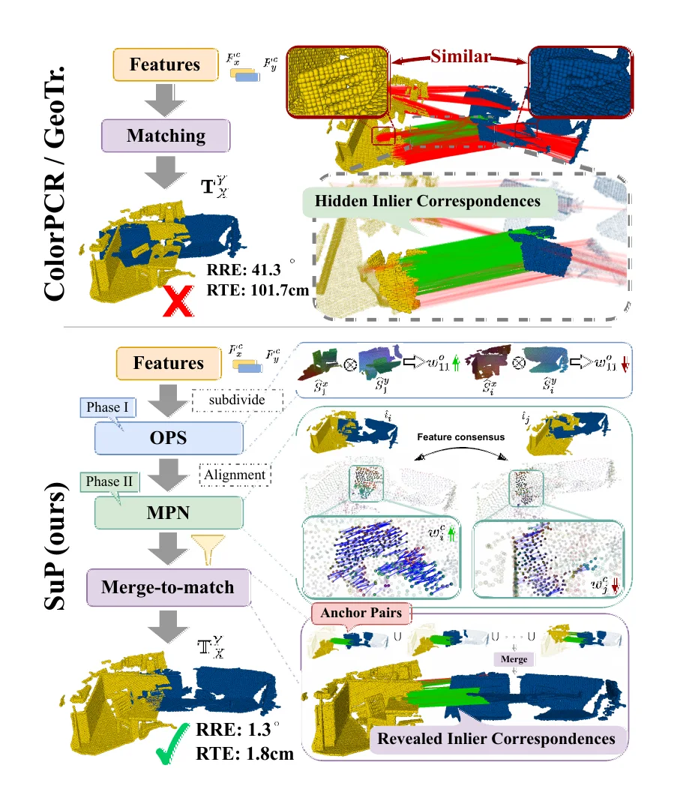
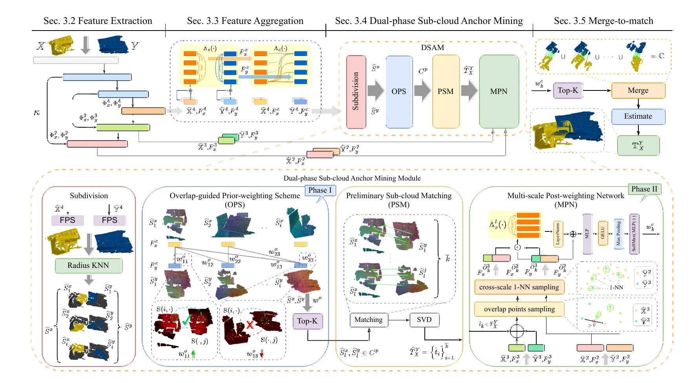
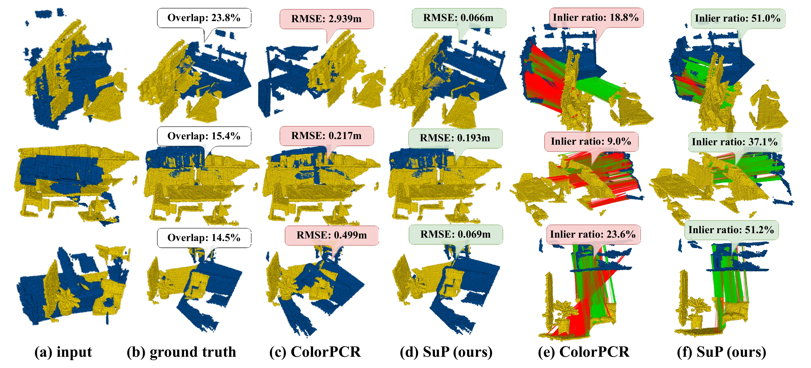
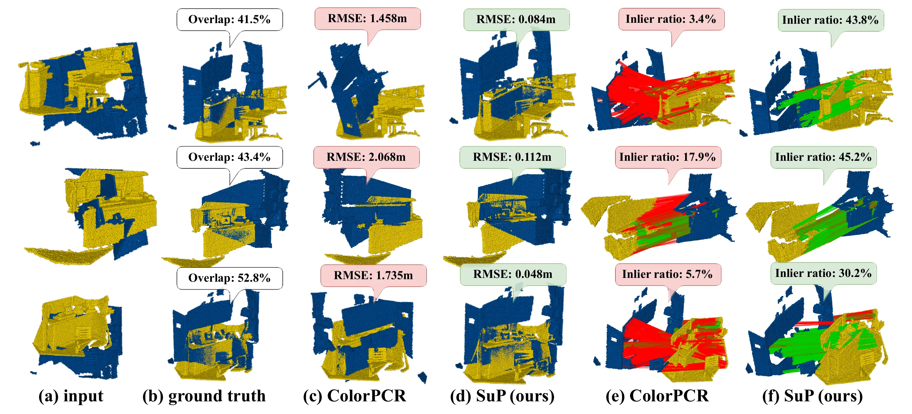
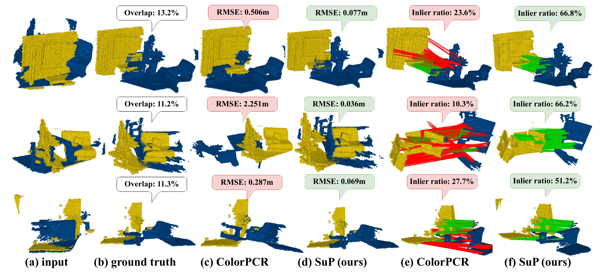

SuP: Sub-cloud Driven Point Cloud Registration

SuP is a CVPR 2026 Highlight paper on robust point cloud registration when two scans have very little shared geometry. The key idea is to stop forcing a direct whole-cloud match in the hardest case. Instead, SuP searches for high-overlap sub-cloud pairs hidden inside a globally low-overlap pair, then uses those anchors to build the final correspondence set.
Problem setting
Low-overlap registration fails for a familiar reason: the non-overlapping regions can still look geometrically or semantically similar. Methods that match the whole source and target cloud can therefore lock onto attractive but wrong structures, while the true inlier region is small and easy to bury under outliers.
SuP reframes this as a local anchor mining problem. Source and target point clouds are subdivided into multiple sub-clouds; among all possible sub-cloud pairs, the method searches for pairs that have high actual overlap and consistent features. Those pairs become reliable supports for the final transformation.

Motivation. Similar non-overlapping structures create false matches, while SuP exposes hidden inlier regions by selecting high-overlap sub-cloud anchor pairs.
Algorithm principle
The pipeline first extracts point-wise features with KPConv and Transformer-based aggregation. The Dual-phase Sub-cloud Anchor Mining (DSAM) module then performs the central selection step. It subdivides each point cloud, scores candidate source-target sub-cloud pairs, estimates preliminary poses for promising candidates, and keeps the anchors with strong feature consensus.
DSAM has two phases. The overlap-guided prior-weighting scheme (OPS) computes feature-correlation based prior weights and selects likely overlapping sub-cloud candidates, avoiding an exhaustive and noisy search over all local pairs. After preliminary sub-cloud matching, the multi-scale post-weighting network (MPN) evaluates feature consensus from aligned candidates at several scales. The top anchor pairs are passed to merge-to-match, where reliable local correspondences are merged and the final rigid transform is estimated.
The training objective combines overlap-aware feature learning, point matching, and an alignment-aware weighting loss. The last term is important: instead of only supervising anchors as static pair labels, it uses the alignment errors produced during training to teach the weighting module which anchors actually lead to good registration.

Method overview. Multi-scale point features are aggregated, DSAM mines anchor pairs through OPS and MPN, and merge-to-match estimates the final transformation from anchor-supported correspondences.
Implementation
The released configuration subdivides each point cloud into six sub-clouds. OPS keeps 24 candidate sub-cloud pairs, and MPN uses an overlap threshold of 0.04 before selecting the top eight feature-consensus weighted anchor pairs. The model is trained end-to-end in PyTorch with SGD, an initial learning rate of 1e-4, exponential decay, and L2 weight decay. The paper reports training for 40 epochs on eight RTX 4070 Ti GPUs, taking about 10 hours.
Results
SuP is evaluated on the color-enhanced 3DMatch (C3DM) and 3DLoMatch (C3DLM) benchmarks. Under the standard RANSAC-based setting, SuP reaches 97.8% registration recall on C3DM and 90.2% on C3DLM. The low-overlap result is the more important one: it shows that sub-cloud anchor isolation helps when direct matching is dominated by outlier correspondences.
The LGR setting confirms the same behavior without relying on RANSAC as the outlier filter. SuP reports 97.8% / 90.2% registration recall on C3DM / C3DLM, with geometric errors of 1.374 degrees / 0.046 m and 2.493 degrees / 0.074 m respectively. As a plug-in, the sub-cloud strategy also improves existing pipelines: GeoTransformer rises from 91.5% to 92.8% RR on C3DM and from 74.0% to 76.7% on C3DLM; PEAL rises from 94.3% to 95.6% and from 81.2% to 83.4%; ColorPCR reaches 97.8% and 90.2%.

Main qualitative comparison. ColorPCR is pulled toward non-overlap outliers; SuP removes many of these misleading correspondences through sub-cloud anchor mining.

Supplementary visual result on C3DM. The sub-cloud strategy keeps more inlier correspondences and produces cleaner alignments.

Supplementary visual result on extremely low-overlap C3DLM pairs. SuP still finds high-overlap anchors when visible overlap is below 15%.
Ablation and takeaways
The ablation study removes OPS, feature consensus weights, MPN, and the alignment-aware weighting loss in sequence. Each component adds a measurable gain, with the full model reaching the best registration recall of 97.8% on C3DM and 90.2% on C3DLM. The sub-cloud subdivision threshold also matters: the reported default, tau = 0.35, balances enough local detail with enough shared support inside each anchor.
For industrial 3D vision, the broader lesson is useful beyond this benchmark. When scans are partial, noisy, repetitive, or captured from difficult viewpoints, robust registration can improve by first locating dependable local anchors rather than trusting global correspondence scores over the entire cloud.